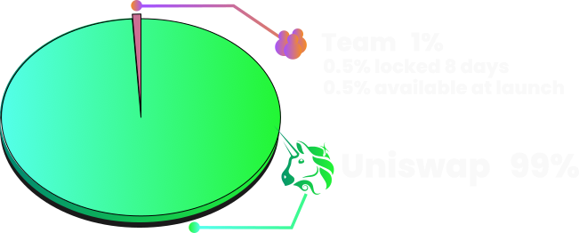

The tokenomics of BURN🔥 are designed to promote rapid growth
Building on what we learnt from past launches we have lowered the starting price and market cap to create early price appreciation.
The starting price on exchange is set at 100m tokens per ETH or roughly $0.000017, this figure has been choosen because it enables a lot of upside potential which we hope will attract early adopters to the project. The total supply is 1 Billion tokens which gives the project a market cap of just $17,000 USD at launch.
99% of the supply is deployed to a Uniswap v3 liquidity pool. The remaining 1% of the supply is distributed to the MemesOnMondays team, 50% of which is locked for 7 days. This ensures aligned motivation and gives them a vested interest in the token's success.
The contract includes a custom burn(amount); function which matches any funds burnt with a matching amount of the teams locked allocation.
If you want to see our the supply go up in flames then we are with you all the way. This novel mechanism means the team allocation could be restricted to 0.5% of the total supply if enough tokens are burnt within the 7 day locking period.
LP NFT receipt from Uniswap v3 is locked in the contract, with no methods to redeem. Contract ownership is renounced.
Our mission at MemesOnMondays is to create a billion dollar market cap memecoin. Read more about it here: https://memesonmondays.com/p/mission